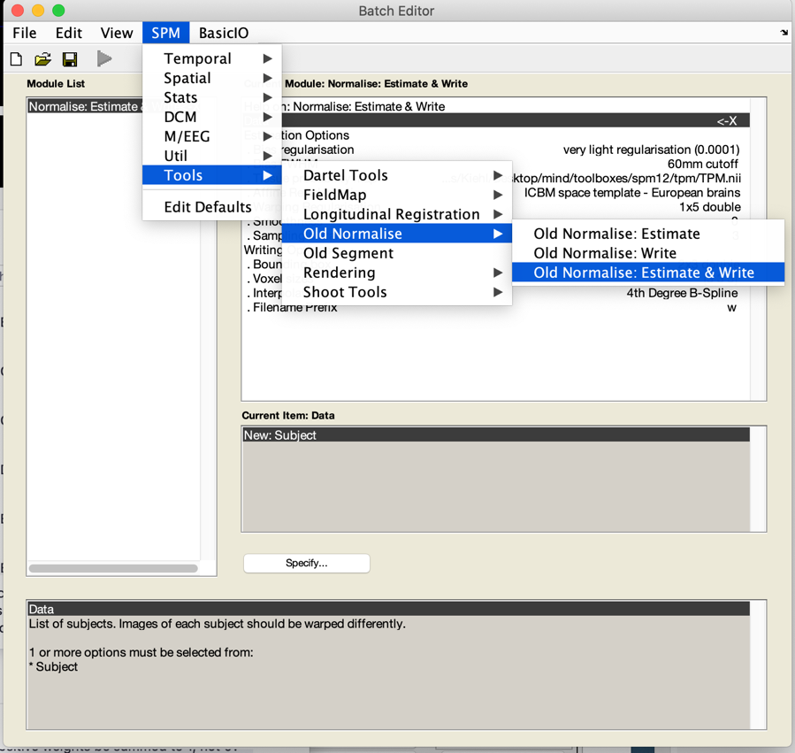

Mind fMRI Image Acquisition and Analyses Course - Cheat Sheet for
Normalization
-Spatial normalization –
This procedure takes the mean fMRI (EPI) image for each session for
each subject and spatially normalizes (using linear and nonlinear
(tailored basis set) to the EPI template provided with SPM. This latter
procedure works well to account for EPI distortions and nonlinear
warping that is not well managed if you use the alternative path of
using the linear coregistration of the mean fMRI (EPI image) for each
session for each subject to the subjects T1 (anatomical) images. Then
the subject’s anatomical T1 image is used to determine spatial
normalization parameters and these parameters are applied to the EPI
images for that subject’s sessions since they are ‘coregistered’ to the
subjects T1 data. This latter step does not consider the nonlinearities
inherent in EPI data.
Here is the citation relevant to this process:
Calhoun, V.D., Wager, T.D., Krishnan, A., Rosch, K.S., Seymour,
K.E., Nebel, M.B., Mostofsky, S.H., Nyalakanai, P., & Kiehl, K.A.
(2017). The impact of T1 vs EPI spatial registration templates for fMRI.
Human Brain Mapping, 38(11), 5331-5342. PMID: 28745021
PMCID: PMC5565844
DOI: 10.1002/hbm.23737
- Set your working directory:
- click on ‘utils’ on the spm gui
- select ‘cd’ – dialog box opens, select your working directory
(e.g., c:\mind)
- Start normalization –
- click on ‘normalization’ button in spm gui; select ‘normalize
<-X’
- in the spm graphics gui, select ‘New “Normalize: Estimate &
Write”
We are going to use the ‘old normalize routine’.
Using your mouse, right click in the ‘module list’ and delete the
Normalize process.
Then select the SPM button, tools, old normalize, estimate and
write.

- click on ‘+Normalize: Estimate & Write’ to expand to see:
-Normalize: Estimate & Write
Data <. X
+Estimation Options
+Writing Options
-Click on ‘Data <-X’
-Click on ‘New “Subject”’ 4 times (once for each session x 2
subjects)
Your display should now look like:
-Normalize: Estimate & Write
Data
+Subject <-X
+Subject <-X
+Subject <-X
+Subject <-X
+Estimation Options
+Write Options
Select ‘Images to write <-X
- Select directory
‘c:\mind\data\auditory_oddball\AOD_raw\s01\run1’
Repeat ‘subject’ specification three more times to select the
mean image for s01 run2, s02 run1, and s02 run2. carefully selecting the
mean image and corresponding functional images to normalize for each
session.
Click on ‘estimation options’,
select ‘template image <-X’
All other options are set for you by default. Always review the
spm normalization postscript output to ensure that you have used ‘4x5x4
basis functions’. If you see ‘9x12x9’ then you may need to renormalize
the data and set the ‘nonlinear frequency cutoff to 45’.
Click on writing options if you want to change any other options.
In our defaults, we are reslicing into 3x3x3 mm.
Click Run and spatial normalization will go.
The outputs include appending the spm_2022mar8.ps with the spatial
normalization output files; you will see ‘means01_aod_run1_sn.mat’ – a
file that contains the transformation data for native space to MNI
space; and you will see ‘ws01_aod_run1.nii’ image file – this file
contains the warped images that are now in MNI space.